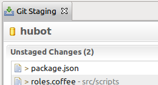
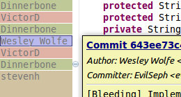
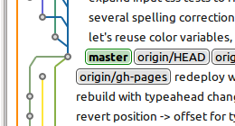

Develop with Git in Eclipse,
Share and discuss on GitHub
Branch, merge, clone, and synchronize repositories from Eclipse with EGit. Work with issues, pull requests, and Gists from Eclipse with the GitHub Mylyn Connector.
Download Git & GitHub for Eclipse
Free to download, free to use.
EGit and the GitHub Mylyn Connector use JGit, a Java implementation of the Git version control system. Download JGit from Eclipse.org
-
Commit Changes
See your uncommitted changes and easily compare, commit, or undo them.
-
Track Edits
See why, when, and by whom each line of a file was last changed.
-
Browse History
Visualize commits over time and quickly see which branches have been merged.
How do I install EGit and the GitHub Mylyn Connector?
To install Egit and the Github Mylyn Connector from within Eclipse, navigate to the Help menu inside of Eclipse and select Install New Software. Enter the Juno update site url and search 'git' in the filter box. Once you've selected the EGit, JGit, and Mylyn GitHub items hit Next to finish the installation.
2.0 June 27, 2012
- fixed Indexing performance problems on large repositories
- added Stash support
- added Importing source projects from a plug-in's Git repository
1.3 February 15, 2012
- added Submodule support
- improved Project import from GitHub and Gerrit
- improved Showing unsychronized commits in Git Repositories view
1.2 December 22, 2011
- fixed Slow performance of text and icon decorations
- added Following renames in History view
- improved Support for project rename
1.1 September 23, 2011
- added Reflog view
- added GitHub pull request support
- improved Content assist in commit dialog
1.0 June 22, 2011
- added Commit search
- added Staging view
- added Blame annotations in the editor
- added GitHub Gists and issues support